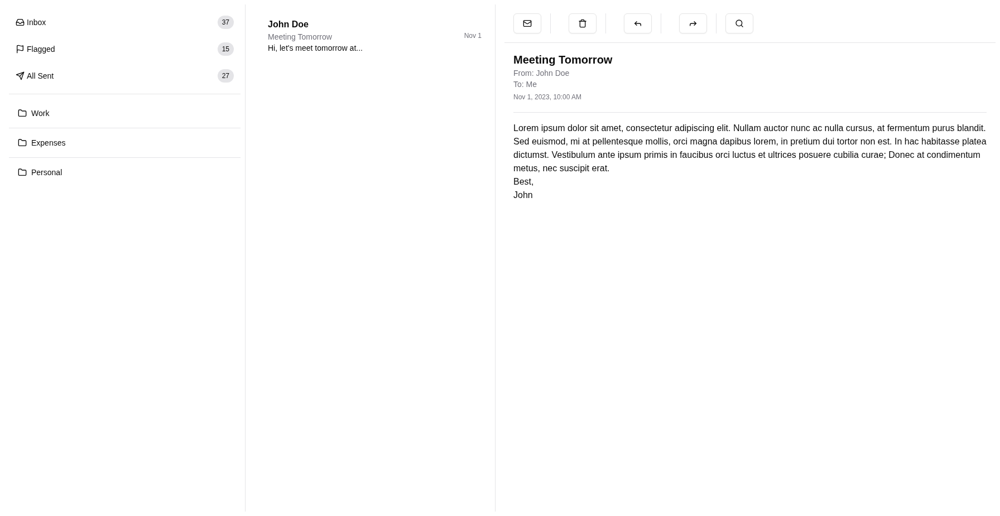
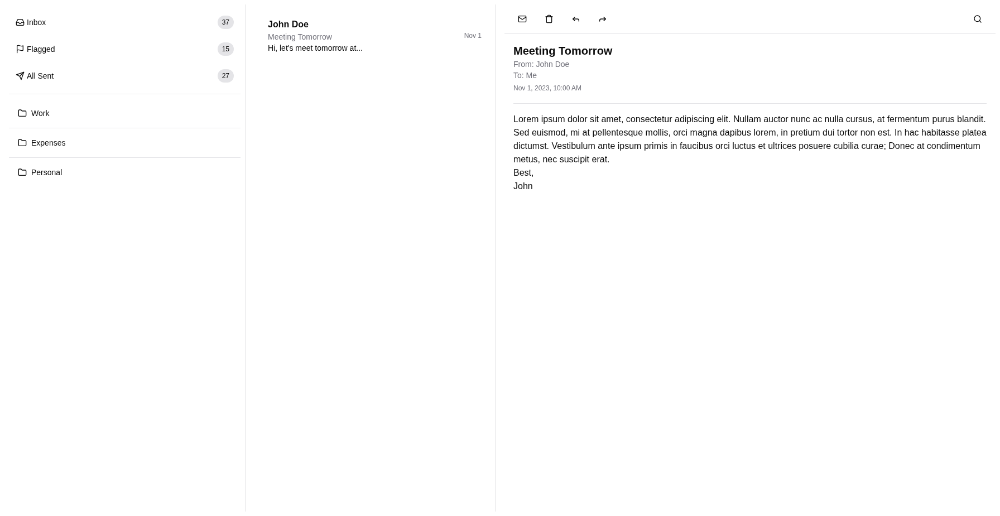
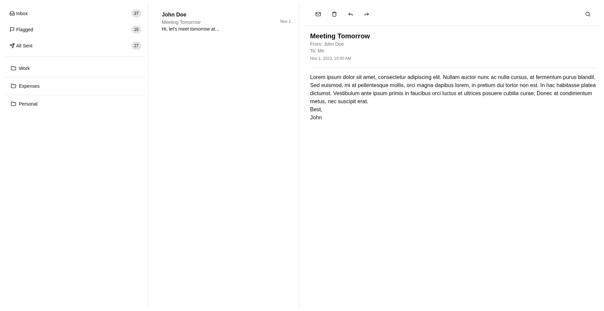

Stage 0 · DesignBench 初始页面
基线
修改前
- 工具栏本来已经
sticky top-0。 - 按钮是
outline，组之间有边框和较大空隙。 - 外层 padding 为
p-4。
真实运行 db-e30__dev-qa__r2。轨迹由 Git 初始提交、QA 实际收到的 Developer diff、OpenCollab session 与最终工作区重建，并非事后虚构示例。
p-4 改成 p-2。p-4，保留所有需求改动；重新验证后通过。
sticky top-0。outline，组之间有边框和较大空隙。p-4。
outline → ghost，去掉边框。space-x-4、分隔边框和 padding，四个主按钮连续排列。p-4 → p-2，改变整条工具栏高度和边缘留白。diff --git a/app/page.tsx b/app/page.tsx
index 042e5f360cdeeaa551d16f325b894940acefb81c..9e210b3e3fd556e648696d1c60b5f7b3e61711bf 100644
--- a/app/page.tsx
+++ b/app/page.tsx
@@ -61,29 +61,29 @@ export default function Component() {
</ul>
</div>
<div className="col-span-2 flex flex-col w-12/20">
- <div className="flex items-center space-x-4 border-b border-zinc-200 dark:border-zinc-800 p-4 sticky top-0 bg-white dark:bg-zinc-900">
- <div className="flex border-r border-zinc-200 dark:border-zinc-800 pr-4">
- <Button variant="outline">
+ <div className="flex items-center border-b border-zinc-200 dark:border-zinc-800 p-2 sticky top-0 bg-white dark:bg-zinc-900">
+ <div className="flex">
+ <Button variant="ghost">
<MailIcon className="w-5 h-5" />
</Button>
</div>
- <div className="flex border-r border-zinc-200 dark:border-zinc-800 px-4">
- <Button variant="outline">
+ <div className="flex">
+ <Button variant="ghost">
<TrashIcon className="w-5 h-5" />
</Button>
</div>
- <div className="flex border-r border-zinc-200 dark:border-zinc-800 px-4">
- <Button variant="outline">
+ <div className="flex">
+ <Button variant="ghost">
<ReplyIcon className="w-5 h-5" />
</Button>
</div>
- <div className="flex border-r border-zinc-200 dark:border-zinc-800 px-4">
- <Button variant="outline">
+ <div className="flex">
+ <Button variant="ghost">
<ForwardIcon className="w-5 h-5" />
</Button>
</div>
<div className="ml-auto">
- <Button variant="outline">
+ <Button variant="ghost">
<SearchIcon className="w-5 h-5" />
</Button>
</div>

p-4。--- a/app/page.tsx
+++ b/app/page.tsx
@@ -61,7 +61,7 @@
</ul>
</div>
<div className="col-span-2 flex flex-col w-12/20">
- <div className="flex items-center border-b border-zinc-200 dark:border-zinc-800 p-2 sticky top-0 bg-white dark:bg-zinc-900">
+ <div className="flex items-center border-b border-zinc-200 dark:border-zinc-800 p-4 sticky top-0 bg-white dark:bg-zinc-900">
<div className="flex">
<Button variant="ghost">
<MailIcon className="w-5 h-5" />